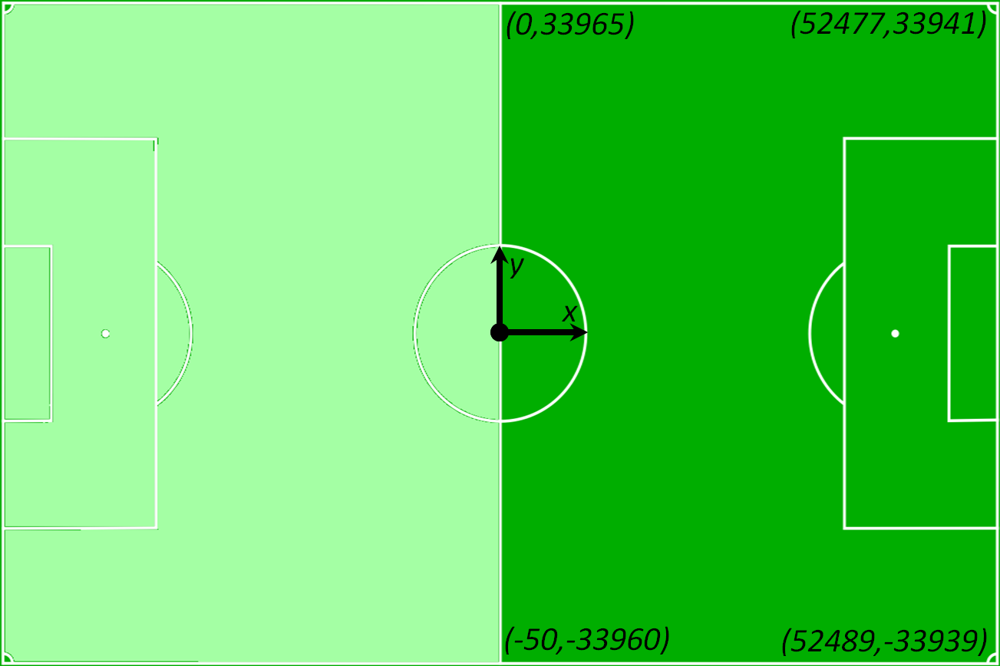
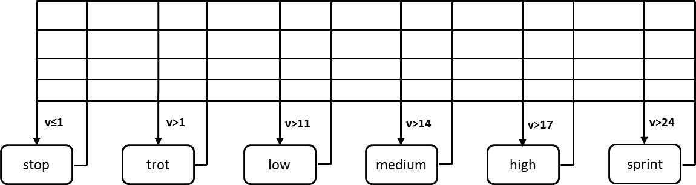
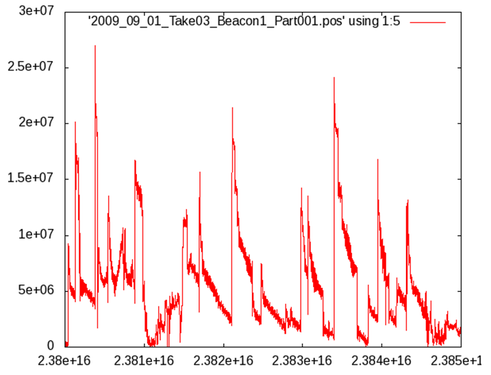
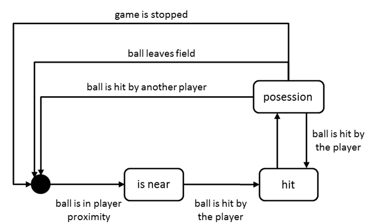
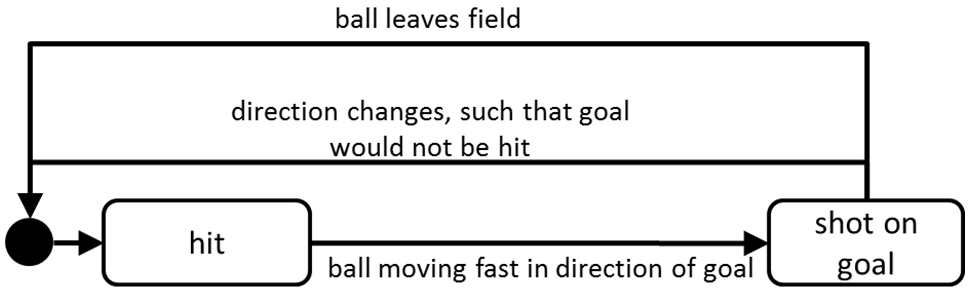

The ACM DEBS 2013 Grand Challenge is the third in a series of challenges which seek to provide a common ground and evaluation criteria for a competition aimed at both research and industrial event-based systems. The goal of the Grand Challenge competition is to implement a solution to a problem provided by the Grand Challenge organizers.
The DEBS Grand Challenge series provides problems which are relevant to the industry at large. DEBS Grand Challenge problems allow for evaluation of event based systems using real-life data and queries.
All DEBS 2013 Grand Challenge submissions must be composed of two parts: (1) a 6 page paper, in ACM SIG proceedings format, outlining the solution, highlighting its innovative aspects and presenting the evaluation and (2) a demonstration of the system – either in
the form of a video or a screencast. All submissions are subject to a peer review process. Authors of all accepted submissions will be invited to present their systems during the DEBS 2013 Conference. Upon the explicit consent from the challenge participants,
authors solutions will be included in the global ranking with the winner of the Grand Challenge being announced and awarded during the conference banquet. The global ranking is based on the peer review process scores and the performance of the solution. The performance is based on the throughput and latency of the system under the assumption of result correctness.
We would like to thank Christopher Mutschler and the Fraunhofer IIS for provisioning the sensor data and for their help in preparing this year’s challenge.
Problem Description
With this year’s challenge, we seek to demonstrate the applicability of event-based systems to provide real-time complex analytics over high velocity sensor data along the example of analyzing a soccer game. The data for the DEBS 2013 Grand Challenge originates from a number of wireless sensors embedded in the shoes and a ball used during a soccer match and spans the whole duration of the game. The real-time analytics includes the continuous computation of statistics of relevance to spectators (ball possession, shots on goal) as well as trainers and team managers (running analysis of team members’).
Data
The data used in this year DEBS Grand Challenge is collected by the Real-Time Locating System deployed on a football field of the Nuremberg Stadium in Germany. Data originates from sensors located near the players’ shoes (1 sensor per leg) and in the ball (1 sensor). The goal keeper is equipped with two additional sensors, one at each hand. The sensors in the players’ shoes and hands produce data with 200Hz frequency, while the sensor in the ball produces data with 2000Hz frequency. The total data rate reaches roughly 15.000 position events per second. Every position event describes position of a given sensor in a three-dimensional coordinate system. The center of the playing field is at coordinate (0, 0, 0) – see Figure 1 for the dimensions of the playing field and the coordinates of the kick off. The event schema is following:
sid, ts, x, y, z, |v|, |a|, vx, vy, vz, ax, ay, az
where sid is a sensor id which produced the position event, ts is a timestamp in picoseconds, e.g.: 10753295594424116 (with the value of 10753295594424116 designating the start and 14879639146403495 the end of the game); x, y, z describe the position of the sensor in mm (the origin is the middle of a full size football field) ; |v| (in μm/s), vx, vy, vz describe direction by a vector with size of 10,000. Hence, the speed of the object in x-direction in SI-units (m/s) is calculated by
v’x = |v| * vx * 1e-4 * 1e-6
(vx in m/s is derived by |v| * 1e-10 * vx) and |a| (in μm/s²), ax, ay, az describe the absolute acceleration and its constituents in three dimensions (the acceleration in m/s² is calculated similar to that of the velocity). The acceleration does not include gravity, i.e. |a| is zero when the ball is at a fixed position and not 9.81 m/s²).

Figure 1: Playing field and its dimensions
In addition to the sensor data we also provide a separate data stream for referee events, which includes the time when a game was paused and the time when a game was resumed. Moreover, referee events contain the time and player_ids for substitutions.
The mapping between player ids and team ids as well as between sensor id and player id is provided in the metadata file.
The game, during which the data has been collected, was played on a half-size field with teams of seven players each. The game duration was two halves of thirty minutes each. We assume that the data arrives at the system under test without any delays, nor omissions.
Raw sensor data for the game can be downloaded from: here (2.6 GB). All data has been aggregated is a single file and is sorted by time stamps. The video recording of the game (vertical view, static camera) can be downloaded from: here (1st half, 1.7 GB) and here (2nd half, 1.7GB). The metadata file that contains player’s names and associated transmitter ids, detailed field coordinates etc. can be downloaded from: here (10 kB). Game interruptions, ball possession statistics, and shots on goal statistics can be downloaded from: here (10 kB). These statistics have been manually created manually and can serve as an aid in validating the respective query results.
Queries
In the following section we identify a number of queries which need to run concurrently and process the position data. Results of all queries must be returned as a stream of data, unless explicitly stated otherwise.
Query 1 – Running Analysis
The goal of this query is to calculate the analysis of the running performance of each of the players currently participating in the game. The intensities are defined as: standing (0-1 km/h), trot (till 11 km/h), low speed run (till 14 km/h), medium speed run (till 17 km/h), high speed run (till 24 km/h), and sprint (faster than 24 km/h). Figure 2 shows the possible transitions between different states which need to be observed for the running analysis.

Figure 2 – Transitions between running intensities for Query 1
In order to accommodate for the noise in the raw velocity measurements, the actual speed of the run should be computed from all the individual speed norms of a player’s transmitters. Here you can see an example plot of the velocity of the ball:

Figure 3 – Velocity of the ball over time
The running analysis query should return two classes of results: (1) current running statistics and (2) a set of aggregate running statistics. The current running statistics should be returned at a frequency of at most 50Hz and must contain following information:
ts_start, ts_stop, player_id, intensity, distance, speed
Where ts_start represents the start of the measurement, ts_stop represents the end of the measurement, player_id is the identifier of a player, intensity describes the intensity of the run, distance is the length of the run (in the horizontal plane only) between ts_start and ts_stop, and speed is the average speed of the given intensity run.
The aggregate running statistics must contain following information:
ts, player_id, standing_time, standing_distance, trot_time, trot_distance, low_time, low_distance, medium_time, medium_distance, high_time, high_distance, sprint_time, sprint_distance
where the ts represent the latest time stamp which updated the statistics, the player_id is the player identifier, xxx_time is the time player spent in the xxx intensity (in milliseconds), xxx_distance is the distance covered with the xxx intensity. The aggregate running statistics must be calculated using four different time windows: 1 minute, 5 minutes, 20 minutes and the whole game duration. Each window must emit an event with the frequency of 50Hz. The result will be four aggregate running statistics streams being returned by the system for each of the required window lengths. Moreover, every running intensity, which has been active for less than a second must be counted on top of the next intensity with a duration longer than 1s. For example, if a player is in a trot state for a longer time, then in a low speed run state for 0.8 seconds, and then in a medium speed run state for a longer time, the time of the low speed run is to be counted on top of the medium speed run.
Please note that the requirement to count only intensities active for at least one second requires you to delay the output until a reliable measurement has been made.
Query 2 – Ball Possession
The goal of this query is to calculate the ball possession for each of the players as well as for whole team. A player (and thereby his respective team) can obtain the ball whenever the ball is in his proximity (less than one meter away – calculated as the distance between the ball sensor and the closest sensor of the player) and he hits (the ball acceleration peaks) it. The ball will stay in his possession until another player hits it, the ball leaves the field, or the game is stopped. The ball possession is calculated as time between the first ball contact (hit) and the last ball contact (hit). The ball may leave the player proximity and will still stay in his possession.

Figure 4 – Ball possession states
A ball is hit if its (transmitter) distance from a player’s foot (transmitter) is less than 1 meter and its acceleration reaches a value of minimal 55 m/s². This value depends heavily on the fitness of the players – values of up to 100 m/s² are more suitable for professional games. It may be appropriate to apply a mean filter onto the acceleration values in order to get better detection performance.
The ball position query should return two classes of results: (1) per player ball possession stream and (2) per team ball possession. The per player ball possession stream should contain following information:
ts, player_id, time, hits
where the ts is the latest time stamp of the event which lead to the update of the ball possession, player_id is the player identifier, time is the total time of the ball possession for a given player, and hits is the total number of ball contacts of a given player.
The per team ball possession result stream must contain following statistics:
ts, team_id, time, time_percent
where the ts is the latest time stamp of the event which lead to the update of the team’s ball possession, team_id is the team identifier, time is the total time of the ball possession for a given team, time_percent is a % of the ball possession for a given team w.r.t. the total ball possession time of both teams. The per team ball possession should be calculated using four different time windows: 1 minute, 5 minutes, 20 minutes and the whole game duration. This results in four aggregate ball possession statistics result streams being returned by the system for each of the required window lengths.
Each statistics streams should be returned with the frequency of maximum 50Hz
Query 3 – Heat Map
The goal of this query is to calculate statistics for how long each of the players spent in which region of the field. For this purpose we define a grid with X rows along the x-axis and Y columns along the y-axis of equal size. The parameters X and Y should be implemented with following values 8 and 13 (a grid of 104 cells), 16 and 25, 32 and 50, 64 and 100 (a grid of 6,400 cells), respectively. The system should return results for all parameter settings in parallel but different result streams.
The system must provide for each cell and each player the percentage of time that the player spent in the respective cell over four different time windows: 1 minute, 5 minutes, 10 minutes and the whole game duration. This results in 16 result streams being returned by the system for each of the required window lengths and parameters for the grid resolution. Each result stream must be updated once per second and contain the following information:
ts, player_id, cell_x1, cell_y1, cell_x2, cell_y2, percent_time_in_time_cell
where the ts represent the time stamp of the latest statistics update, the cell_x1, cell_y1, cell_x2, cell_y2 are the coordinates of the lower left and upper right corner of the cell – respectively, the player_id is the player identifier, percent_time_in_time_cell is the percentage of time that player spent in the cell during the period specific to the result stream (0.00%-100.00%).
Query 4 – Shot on Goal
The aim of this query is to detect when a player shoots the ball in an attempt to score a goal. A shot on the goal is defined as any shot that would hit (or closely miss) the goal of the opposing team. Note, that this includes unsuccessful attempts that are e.g. blocked by a player or saved by the goal keeper.
Below we provide suggestions for the implementation of the shot detection. However, we also allow alternative implementations that yield good results (i.e. closely resemble the result lists provided in referee-events.tar.gz).
Figure 5 gives an overview of suggested states and transitions of the shot detection. A shot is detected if the player with id <player_id> hits the ball with a minimal acceleration of 55 m/s², and the projected movement of the ball would cross the opponents’ goal area within 1.5 seconds after the hit. The goal areas are defined as rectangles with the following coordinates:
Goal area team 1: x > 22578.5 and x < 29898.5, y = 33941.0, z < 2440.0
Goal area team 2: x > 22560.0 and x < 29880.0, y = -33968.0, z < 2440.0
Please note that the hit distorts the speed values of the ball. The data are preprocessed by a Kalman-filter and stabilize over time. The computation of the projection may take this into account. To allow for corrective measures we only require that the shot is detected at latest when the ball moved 1m away from the hit location.
We leave it open in the challenge to which degree the projection considers the physics of a flying ball in the projection. A base-line solution that simply extrapolates the motion vector is acceptable. However, more accurate computations of the ball movement (e.g. considering gravity) would be appreciated.
For the duration of the shot (i.e. as long as the state “shot on goal” in Figure 5 is active) the result stream should be updated with motion values of the ball and the ID of the shooting player:
ts, player_id, x, y, z, |v|, vx, vy, vz, |a|, ax, ay, az
The result stream should be updated with the frequency of the sensor data until an exit condition occurs. Exit conditions are (a) the ball leaves the field, or (c) the direction changes such that the goal area would no longer be hit.

Figure 5 – Shot on goal states
Frequently Asked Questions
Question 1: The playing field is not a perfect rectangle. Is it allowed to approximate the field with a perfect rectangle in the queries?
Answer 1: Yes. We suggest to use the following coordinates if you opt for an approximation: (0,33965), (0,-33960),(52483,33965),(52483,-33960)
Question 2: Each player has a sensor at each foot. How should the speed and location of a player be calculated based on these two sensors?
Answer 2: The speed and position should be computed as average of two sensors. (It is therefore ok to update the speed value at a rate of 200 updates per second, i.e. whenever new values for both sensors are available.)
Question 3: I am using the schema sid, ts, x, y, z, |v|, vx, vy, vz, |a|, ax, ay, az for the input stream. However, some values seem to make no sense.
Answer 3: There has been an error in data description for the first few days after the challenge was published. The correct schema for the sensor stream is following: sid, ts, x, y, z, |v|, |a|, vx, vy, vz, ax, ay, az.
Question 4: The heat map should be computed with different parameters for the cell size. How exactly should the listed parameters be combined?
Answer 4: The combination of parameters show be the following:
8 X 13 –> 104 cells
16 X 25 –> 400 cells
32 X 50 –> 1600 cells
64 X 100 –> 6400 cells
Question 5: What are the specifications of the VM that we are supposed to deliver in the end?
Answer 5: We only need a vmdk file – we will specify the VM parameters ourselves. They will be identical for all participants. The minimum parameters will be: 4 cores (@2.8 GHz), 4 GB RAM, SSD HDD, and 1GB Ethernet. The VM will be used for both testing of the throughput and correctness. Please note that the provisioning of the VM is on a voluntary basis and is only necessary for those who want to be included in the final ranking. Specifically it does not influence your chances of getting accepted into the main event.
Question 6: There are negative values for the z-position. How can this be?
Answer 6: The absolute positioning along the z-axis is error prone. Hoverer, the relative movements along this axis are measured with high accuracy. Please use only relative values.
Question 7: What does it mean, “Results of all queries must be returned as a stream of data”? Written to a file? Transmitted via the event system?
Answer 7: It is enough to write results to stdout or to a file.
Question 8: Each sensor event has a timestamp. Is it required to time the data replay according to this timestamp?
Answer 8: It is okay to ignore the timestamp for replaying the data. However, the query results must be in accordance with the timestamp in the data (e.g. length of temporal windows).
Question 9: What are the exact start and end times for the two halves of the game?
Answer 9:
1st Half:
Start of Game: 10753295594424116
End of Game: 12557295594424116
Without Ball: 12398************
2nd Half:
Start of Game: 13086639146403495
End of Game: 14879639146403495
Towards the end of the 1st half we had technical issues with the locating system so that the last 2.5 minutes are without the active ball transmitter (see without ball above). Hence, the shot on goal and ball possession query cannot produce valuable information for that
time.
Question 10: How often should the result streams be updated?
Answer 10: unless explicitly stated otherwise, each result stream must be updated for every input event.
Question 11: Should the windows in the heat map span halves?
Answer 11: No, the halves should be split.
Question 12: Are solutions supposed to work on actual real-time data or can we take advantage of the fact that data is already stored in a CSV file (and thus make an implementation which is not suitable for a real-time system?
Answer 12: We require all participants to keep the real-time aspect.
Question 13: Ball Possession – is the 1m distance from player to ball from the center or surface of the ball?
Answer 13: For simplicity the distance should be calculated as the distance between the two transmitters (the closest one on the player and the one in the ball).
Question 14: Running Analysis – what happens if we face a chain of intensity changes which duration of each one is less than 1 second?
Answer 14: You should delay until you get a measurement lasting at least 1 second.
Question 15: The output frequency for the running analysis is 50Hz. However, it is necessary to delay the output in order to correctly process running intensity changes. Are these conflicting requirements?
Answer 15: The defined output rate should limit the output to a *maximum* of 50Hz. Specifically, we do not want to enforce an exact rate of 50Hz. Therefore, it is OK to delay the output if no result can be computed at the moment.
Question 16: For the Query 3 – Heat Map – is it consequently correct that (6400 + 1600 + 400 + 104) * 4 = 34016 events should be emitted by the system for this query per second?
Answer 16: Yes. In order to balance the i/o throughput it is also possible to alter the result format and provide one large event contaning data for all cells in a given second for a given grid size.
Question 17: When I run my query for Q4, the time stamps I get are about five seconds ahead of both the videos. Is it normal?
Answer 17:Yes, the video is not fully aligned with the sensor data (the sensor recordings start earlier). The actual game starts at timestamp 10753295594424116.
Question 18: I would like to know whether the result schema for Query 4 presents a typo or if it is meant to include two timestamps. The schema is: ts, player_id, ts, x, y, z, |v|, vx, vy, vz, |a|, ax, ay, az. What is the difference between the two “ts” fields?
Answer 18:Yes this is a typo. A correct schema definition should contain only one timestamp as the first column. We have updated the query description accordingly.